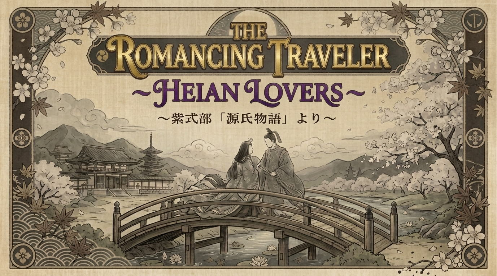

GAMEBOOK powered by STORYEM
文章および画像の制作に生成AIツールを使用しました。内容は制作者によって確認・修正・最終調整されています。
Generative AI tools were utilized in the creation of the text and images for this work.
All AI-generated content has been meticulously reviewed, edited, and finalized by the creator.
12歳以上推奨
Recommended for ages 12 and up
本作は11世紀の古典文学を元にしており、当時の社会通念や風習を描写しています。
現代の倫理基準とは異なる表現が含まれる場合があります。
This work is based on 11th-century classical literature and reflects the social norms and customs of that era.
Some content may depict themes or behaviors that differ from modern ethical standards.